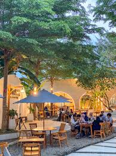
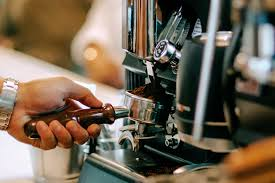
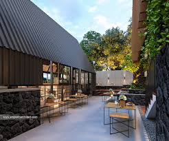
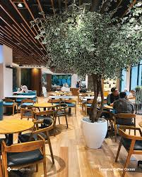
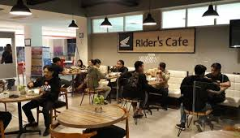

Cerita Kami
Kopi Santai didirikan oleh sekelompok pecinta kopi dengan tujuan membawa pengalaman ngopi berkualitas ke lingkungan sekitar. Dimulai dari sebuah gerai kecil pada tahun 2018, kami berfokus pada kualitas biji dan pelayanan ramah.
Kami selalu memilih biji kopi dari petani lokal yang menerapkan praktik ramah lingkungan. Proses pemanggangan kami dikembangkan untuk menonjolkan karakter rasa tiap daerah asal biji.
Visi kami adalah menjadi ruang komunitas di mana orang dapat bekerja, berbincang, atau sekadar istirahat sejenak dari aktivitas harian — sambil menikmati kopi yang konsisten kualitasnya.
"Kopi yang baik adalah awal percakapan yang hebat."
Nilai-Nilai Kami
- Kualitas Premium
- Pelayanan Terbaik
- Sustainability
- Community
- Inovasi Rasa
Galeri Kafe






Lokasi & Jam Buka
Kunjungi kami di lokasi berikut atau hubungi untuk reservasi dan event.
Jam Operasional
| Senin - Jumat | 08:00 - 21:00 |
| Sabtu | 08:00 - 22:00 |
| Minggu | 09:00 - 20:00 |
Telepon: +62 812-3456-789